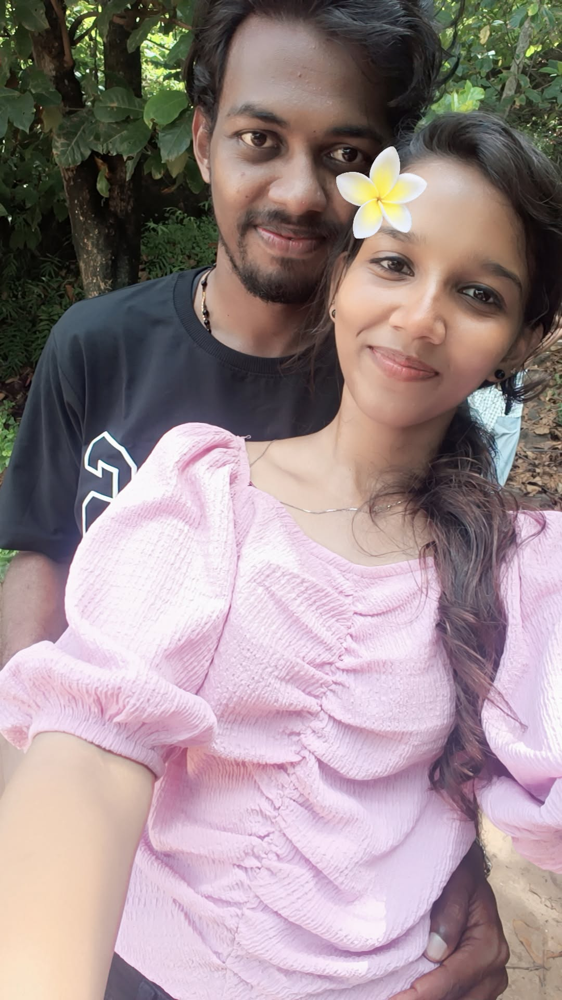

Where it began
Our first meeting in Trivandrum
I still remember the beginning. Among all the ordinary days, that meeting became a special page in my life. I'm grateful our paths crossed.

Our first meeting in Trivandrum
Add a photo from this day to make this memory yours.
A tiny moving memory from where it began. This short clip starts muted automatically; tap the video for sound.
Take your time. There's no rush. ♡